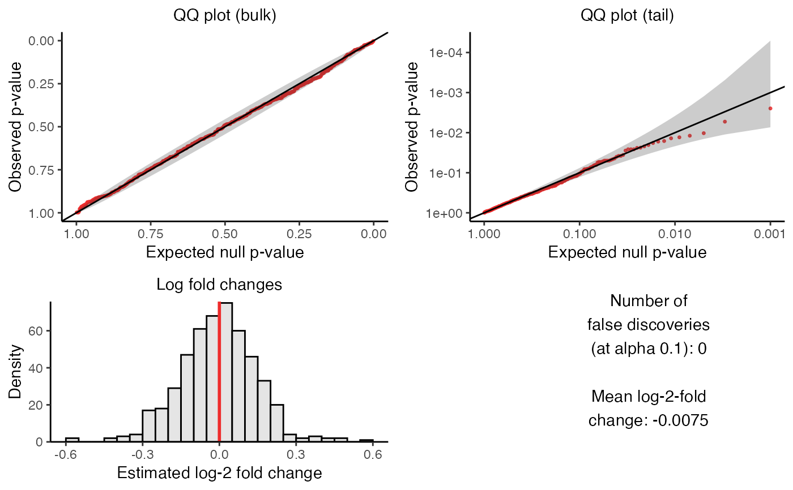

plot_run_calibration_check() creates a visualization of the outcome of
the calibration check. The visualization consists of four panels, which we
describe below.
The upper left panel is a QQ plot of the p-values plotted on an untransformed scale. The p-values ideally should lie along the diagonal line, indicating uniformity of the p-values in the bulk of the distribution.
The upper right panel is a QQ plot of the p-values plotted on a negative log-10 transformed scale. The p-values ideally should lie along the diagonal line (with the majority of the p-values falling within the gray confidence band), indicating uniformity of the p-values in the tail of the distribution.
The lower left panel is a histogram of the estimated log-2 fold changes. The histogram ideally should be roughly symmetric and centered around zero.
Finally, the bottom right panel is a text box displaying (i) the number of false discoveries that
sceptrehas made on the negative control data and (ii) the mean estimated log-fold change.
Usage
plot_run_calibration_check(
sceptre_object,
point_size = 0.55,
transparency = 0.8,
return_indiv_plots = FALSE
)Arguments
- sceptre_object
a
sceptre_objectthat has hadrun_calibration_checkcalled on it- point_size
(optional; default
0.55) the size of the individual points in the plot- transparency
(optional; default
0.8) the transparency of the individual points in the plot- return_indiv_plots
(optional; default
FALSE) ifFALSEthen a list ofggplotis returned; ifTRUEthen a singlecowplotobject is returned.
Value
a single cowplot object containing the combined panels (if
return_indiv_plots is set to TRUE) or a list of the individual
panels (if return_indiv_plots is set to FALSE)
Examples
data(highmoi_example_data)
data(grna_target_data_frame_highmoi)
# import data
sceptre_object <- import_data(
response_matrix = highmoi_example_data$response_matrix,
grna_matrix = highmoi_example_data$grna_matrix,
grna_target_data_frame = grna_target_data_frame_highmoi,
moi = "high",
extra_covariates = highmoi_example_data$extra_covariates,
response_names = highmoi_example_data$gene_names
)
sceptre_object |>
set_analysis_parameters(
side = "left",
resampling_mechanism = "permutations"
) |>
assign_grnas(method = "thresholding") |>
run_qc() |>
run_calibration_check(
n_calibration_pairs = 500,
calibration_group_size = 2
) |>
plot_run_calibration_check()
#> Note: If you are on a Mac laptop or desktop, consider setting `parallel = TRUE` to improve speed. Otherwise, keep `parallel = FALSE`.
#> Constructing negative control pairs.
#> ✓
#> Generating permutation resamples.
#> ✓
#> Analyzing pairs containing response ENSG00000253631 (1 of 96)
#> Analyzing pairs containing response ENSG00000100053 (5 of 96)
#> Analyzing pairs containing response ENSG00000100325 (10 of 96)
#> Analyzing pairs containing response ENSG00000253963 (15 of 96)
#> Analyzing pairs containing response ENSG00000100314 (20 of 96)
#> Analyzing pairs containing response ENSG00000177993 (25 of 96)
#> Analyzing pairs containing response ENSG00000099956 (30 of 96)
#> Analyzing pairs containing response ENSG00000253920 (35 of 96)
#> Analyzing pairs containing response ENSG00000203280 (40 of 96)
#> Analyzing pairs containing response ENSG00000187792 (45 of 96)
#> Analyzing pairs containing response ENSG00000211666 (50 of 96)
#> Analyzing pairs containing response ENSG00000236611 (55 of 96)
#> Analyzing pairs containing response ENSG00000253546 (60 of 96)
#> Analyzing pairs containing response ENSG00000099917 (65 of 96)
#> Analyzing pairs containing response ENSG00000253889 (70 of 96)
#> Analyzing pairs containing response ENSG00000099889 (75 of 96)
#> Analyzing pairs containing response ENSG00000241973 (80 of 96)
#> Analyzing pairs containing response ENSG00000225783 (85 of 96)
#> Analyzing pairs containing response ENSG00000279548 (90 of 96)
#> Analyzing pairs containing response ENSG00000100068 (95 of 96)
